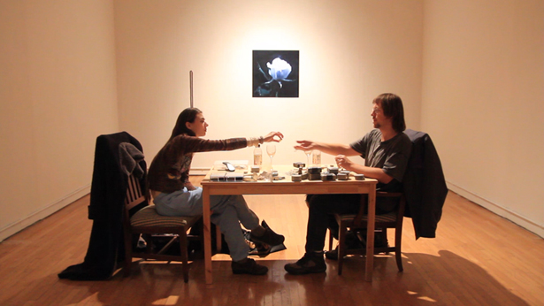

"The fact that people couldn’t enter made it a diorama, it flattened it." - Bunny Rogers
Referencing anonymous gifts left at a graveside or vigil, the site is also curiously game-like: the existence of more and less common flowers (most common is light purple, whfilripile glittering transparent roses are rare) makes each visit feel like rolling a die.